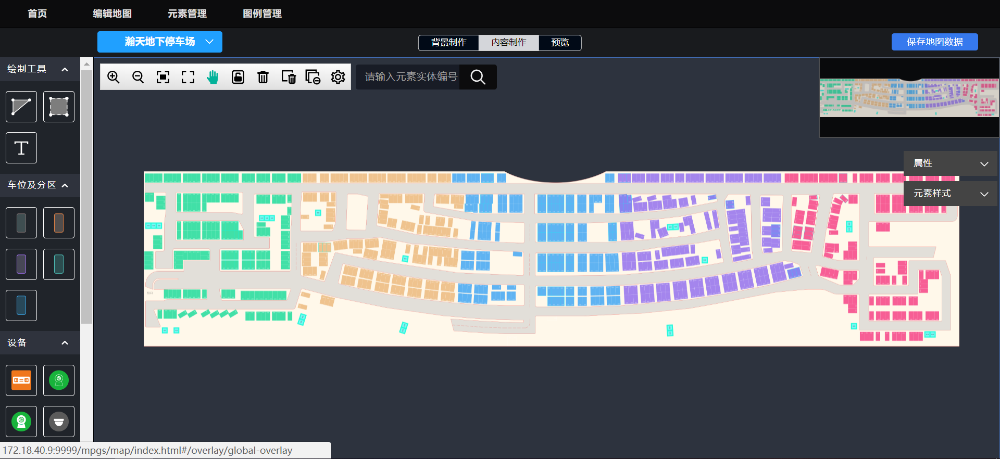

地图编辑器编辑地图支持部分加载功能，部分加载功能在内容制作中增加配置项，默认关闭，开启后开启部分加载功能：
1、编辑地图时，地图数据分三个层级逐级放大比例显示；比例越大，表示的范围越小，内容越详细。
2、第一比例最小，表示的范围越大（整个地图），元素显示底图、地图背景、区域等；最初打开地图编辑页面时默认显示第一比例，即显示整个地图，元素显示底图、区域、地图背景等元素。
3、放大到第二比例时，在第一比例的基础上增加显示设备、标识和路径图标等元素。
4、放大到第三比例时，在第二比例的基础上增加显示车位元素。
5、第三比例缩小至第二比例时，隐藏车位元素；第二比例缩小至第一比例时，隐藏设备、标识和路径图标等元素。
6、部分加载功能仅针对编辑地图，全屏监控页面依然维持原有逻辑，加载所有元素。
部分加载
禁用